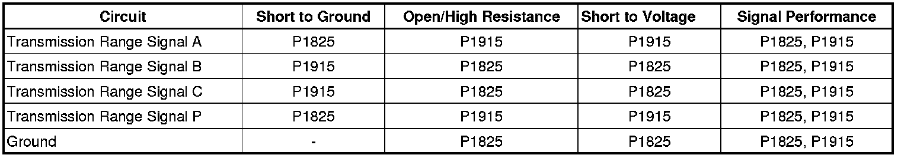
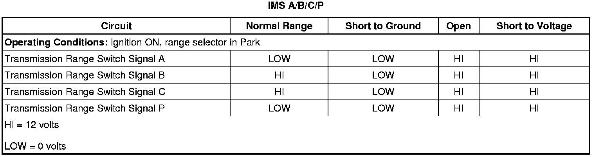
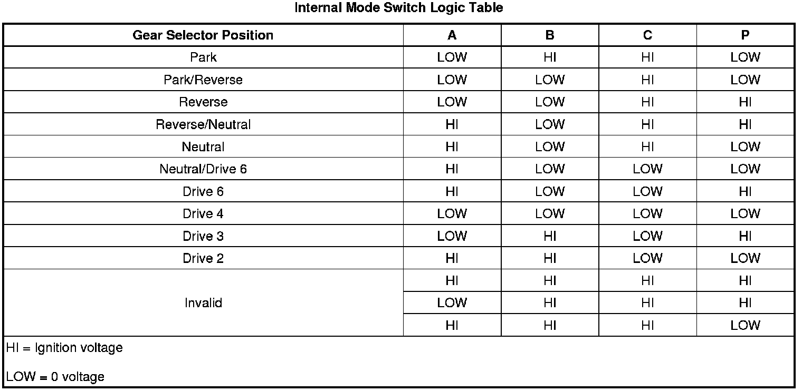

6L50/6L80/6L90 - Automatic Transmission
DTC P1825 or P1915
Diagnostic Instructions
* Perform the Diagnostic System Check - Vehicle (Initial Inspection and Diagnostic Overview) prior to using this diagnostic procedure.
* Review Strategy Based Diagnosis (Initial Inspection and Diagnostic Overview) for an overview of the diagnostic approach.
* Diagnostic Procedure Instructions (Initial Inspection and Diagnostic Overview) provides an overview of each diagnostic category.
DTC Descriptors
DTC P1825
- Internal Mode Switch - Invalid Range
DTC P1915
- Internal Mode Switch Does Not Indicate Park/Neutral (P/N) During Start
Diagnostic Fault Information

Typical Scan Tool Data

Circuit/System Description
The internal mode switch (IMS) assembly is a sliding contact switch that connects to the control solenoid (w/body and TCM) valve assembly within the transmission. The 4 inputs to the transmission control module (TCM) from the switch indicate which position is selected by the transmission manual shaft. The input voltage at the TCM is high when the switch is open and low when the switch is closed to ground. The state of each input is displayed on the scan tool as IMS. The IMS input parameters represented are transmission range signal A, Signal B, signal C, and signal P.
Conditions for Running the DTC
P1825
* The engine speed is greater than 500 RPM for 5 seconds.
* The ignition voltage is between 8.6 volts and 19.0 volts.
P1915
* No OSS DTCs P0722 or P0723 and are not Fault Active or Test Fail this Key ON.
* The transmission output shaft speed is less than 90 RPM or less.
* The ignition voltage is between 6.0 volts and 18.0 volts.
Conditions for Setting the DTC
P1825
Any one of the following Fail Cases occur:
Fail Case 1
The TFP Switch 3 or TFP Switch 4 is pressurized with the commanded gear 1st - engine braking and the IMS indicates a 01 (Invalid) transitional state for 8 seconds or more.
Fail Case 2
The TFP Switch 3 or TFP Switch 4 is pressurized and the IMS indicates a TRAN 13 Park/Reverse transitional state for 8 seconds or more.
Fail Case 3
The TFP Switch 3 or TFP Switch 4 is pressurized and the IMS indicates a Invalid transitional state for 1.25 seconds or more 6 times during the same ignition cycle.
Fail Case 4
The IMS indicates an invalid range or the IMS state and the ECM Park/Neutral signal do not match for 6.25 seconds or greater.
Fail Case 5
The TFP Switch 3 or TFP Switch 4 is pressurized, the vehicle speed is 16 km/h (10 mph) or greater, and the IMS indicates a Drive 4/Drive 3 transitional state for 3 seconds or greater.
P1915
The manual shift shaft IMS switch assembly does not indicate Park or Neutral during the following sequence:
* The engine speed is less than 50 RPM for more than 0.15 seconds.
* The engine speed is 50-480 RPM for more than 0.07 seconds.
* The engine speed is greater than 525 RPM for more than 3.25 seconds.
* The transmission input shaft speed is 200 RPM or greater.
Action Taken When the DTC Sets
* DTCs P1825 and P1915 are Type A DTCs.
* The TCM commands maximum line pressure.
* The TCM turns off all solenoids - HSD1 and HSD2.
* The TCM freezes transmission adaptive functions.
* The TCM defaults the transmission to third gear if the current gear is 1st, 2nd, or 3rd; or fifth gear if the current gear is 4th, 5th, or 6th gear.
* The TCM inhibits TCC.
* The TCM inhibits Tap up and Tap down functions.
Conditions for Clearing the DTC
DTCs P1825 and P1915 are Type A DTCs.
Diagnostic Aids
The IMS is part of a 5 wire harness, which connects electrically to the control solenoid (w/body and TCM) valve assembly. Inspect the IMS, harness, connector, and control solenoid (w/body and TCM) valve assembly pins for metallic debris. Use a terminal test kit for any test that requires probing the control solenoid (w/body and TCM) valve assembly harness connector or a component harness connector.
Disconnecting the 16-way connector from the transmission will disable TCM communications. Use the Internal Mode Switch Logic table to compare scan tool reading with the transmission fluid pressure (TFP) switch. TFP switch states should correspond to the correct gear positions.
Reference Information
Schematic Reference
Automatic Transmission Controls Schematics (Electrical Diagrams)
Connector End View Reference
Component Connector End Views (Connector Views)
Electrical Information Reference
* Circuit Testing (Component Tests and General Diagnostics)
* Connector Repairs (Component Tests and General Diagnostics)
* Testing for Intermittent Conditions and Poor Connections (Component Tests and General Diagnostics)
* Wiring Repairs (Component Tests and General Diagnostics)
Description and Operation
Electronic Component Description (Electronic Component Description)
DTC Type Reference
Powertrain Diagnostic Trouble Code (DTC) Type Definitions (Diagnostic Trouble Code Descriptions)
Scan Tool Reference
Control Module References (Programming and Relearning) for scan tool information
Circuit/System Verification
Test for the correct operation of the IMS. Refer to Transmission Internal Mode Switch Logic (Transmission Internal Mode Switch Logic) .
If the IMS operation matches the IMS logic table, the system is functioning normally.
Circuit/System Testing
1. Disconnect the IMS connector at the control solenoid (w/body and TCM) valve assembly. Ignition On. The scan tool IMS A/B/C/P parameter should display HI for all four signal circuits.
• If a signal circuit displays LOW, the control solenoid (w/body and TCM) valve assembly is faulty.
2. Connect a 3-amp fused jumper wire between each transmission range signal circuit at the control solenoid (w/body and TCM) valve assembly and ground ensuring the signal circuit displays LOW when connected to ground.
• If a signal circuit remains HI when connected to ground, the control solenoid (w/body and TCM) valve assembly is faulty.
• If the above two tests indicate correct TCM functions, the IMS is faulty.
Component Testing

Repair Instructions
Perform the Diagnostic Repair Verification (Verification Tests) after completing the diagnostic procedure.
Important: Perform the Control Solenoid Valve and Transmission Control Module Assembly Inspection (Control Solenoid Valve and Transmission Control Module Assembly Inspection) for the following components before replacing the components.
* Internal Mode Switch (IMS) Replacement. Refer to Manual Shift Shaft Position Switch Replacement (6L50/6L80/6L90 - Automatic Transmission) .
* Control Solenoid (w/Body and TCM) Valve Assembly Replacement. Refer to Control Module References (Programming and Relearning) for replacement, setup, and programming.